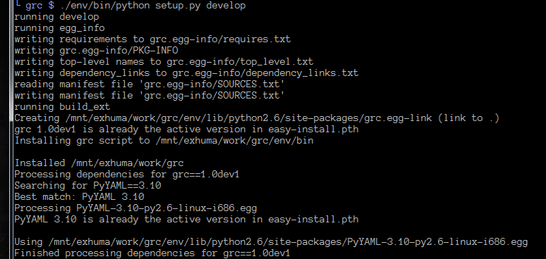
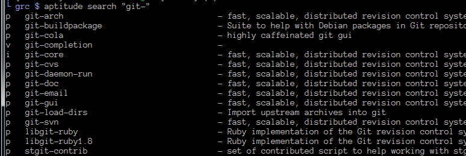
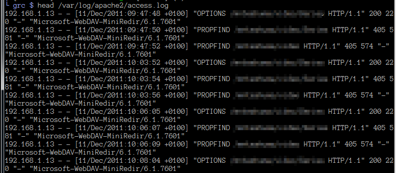

Main Level¶
- root
- Specifies the primary context
All other keys represent a context you pushed somewhere.
Note
Inspired by http://kassiopeia.juls.savba.sk/~garabik/software/grc.html
grc allows you to colorize (even transform) shell output.
Available at http://kassiopeia.juls.savba.sk/~garabik/software/grc.html
While the original grc is a bit smarter with subprocesses, this rewrite focuses on ease of use (including Installation, Configuration and source-code access).
Installation should also honour the Linux FHS
sed and awk are extremely powerful tools, and can certainly do what grc does. They will certainly perform better on large streams. It’s their intended use afterall. However, they both use an archaic and arcane syntax for their scripts. Additionally, if you would like to colorize your output with these, you need to work with ANSI escape sequences. grc aims to simplify this by having a more readable Configuration syntax, and by hiding the ANSI escape sequences.
Thanks to the liberal licensing of all third-party dependencies (pyyaml and pexpect) I could re-package them into the grc namespace. This makes grc completely standalone. As a result you can safely install it into the system (i.e. without using virtualenv) without the risk of breaking other packages.
As a consequence, installation is as easy as typing:
pip install grc
or:
easy_install grc
Note
This is the best supported mode of operation.
<some_process> | grc -c <config>
tail -f /var/log/apache2/access.log | grc -c apache_access
Note
Use this if you don’t care about the downsides, and are lazy to type.
grc <some_procss>
grc aptitude search python
grc searches three locations for configuration files in order:
The first matching config file wins. This means, you can override any system-wide configs with your own concoctions.
grc uses YAML as config syntax. Comparing to .ini and json files (both included in the Python stdlib), this syntax lends itself much better to the requirements of this application.
See Config Reference for more details.
# the primary context. This section must exist!
root:
- match: '^(running)(.*)'
# demonstrating replacements /and/ colorizing
replace: '*** ${GREEN}\1${NORMAL}\2'
- match: '^(writing)(.*)'
replace: '>>> ${YELLOW}\1${NORMAL}\2'
- match: '^(reading)(.*)'
replace: '<<< ${BLUE}\1${NORMAL}\2'
- match: '^(Processing dependencies for)(.*)'
replace: '${GREEN}\1${NORMAL}\2'
# switch to the "dependencies" context
push: dependencies
- match: '^(Installing.*)'
replace: '>>> ${GREEN}\1${NORMAL}'
# the "dependencies" context
dependencies:
- match: '^(Finished processing dependencies for)(.*)'
replace: '${GREEN}\1${NORMAL}\2'
# Revert back to the "root" context
pop: yes
- match: '^(Searching for )(.*)$'
replace: '\1${BLUE}\2${NORMAL}'
# switch to the "dependency" context
push: dependency
# the "dependency" context
dependency:
# Let's prepend all lines with a small indent and pipe.
# To do this, we specify a "match-all" regex, replace the line, and
# specify that we will continue with the next matching rule using
# "continue"
- match: '(.*)'
replace: ' | \1'
continue: yes
# Note that after the above rule, all lines are prepended with
# additional text. We need to include this in the regex!
- match: '^ \| (Installing.*)'
replace: ' | >>> ${GREEN}\1${NORMAL}'
- match: '^ \| (Running.*)'
replace: ' | ${GREEN}\1${NORMAL}'
- match: '^ \| (Best match.*)'
replace: ' | ${GREEN}\1${NORMAL}'
- match: '^ \| (WARNING|warning)'
replace: ' | ${YELLOW}\1${NORMAL}'
- match: '^ \| Installed(.*)'
replace: ' | Installed\1\n'
pop: yes
All other keys represent a context you pushed somewhere.
A context is simply a list of rules
Type: string
A python regular expression. If this matches somewhere in the input line, all occurrences will be replaced with the string specified in replace.
Note
While YAML does not enforce you to enclose strings in quotes, I is strongly recommend you use single quotes for regexps to avoid trouble with string escapes (backslashes).
Type: string
If continue is false (the default), this string will be emitted to stdout. Otherwise, this string will be passed to the next matching rule. Not that the following rule sees the modified string!
Note
While YAML does not enforce you to enclose strings in quotes, I is recommend using single quotes if using backreferences (backslashes).
Type: boolean
If true, don’t write the string yet to stdout. Instead, pass it on to the next matching rule.
Type: string
Pushes a new context onto the stack. All following lines from stdin will be matched agains rules in the new context.
Note
This may change in a future release to give you yet more control
Type: boolean
If this is set to true, then return to the previous context after this rule has been processed. If in the root context, this is a no-op.
Note
This may change in a future release to give you yet more control
| A python setup session | |
|---|---|
| Before | After |
|  |  |
| Simple aptitude search | |
|---|---|
| Before | After |
|  |  |
| Apache access_log | |
|---|---|
| Before | After |
|  |  |